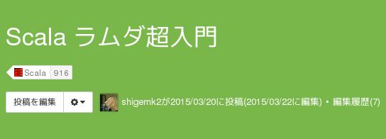

Your browser doesn't support the features required by impress.js, so you are presented with a simplified version of this presentation.
For the best experience please use the latest Chrome, Safari or Firefox browser.
Scalaでラムダをいろいろ @shigemk2
Qiitaに書いた

ラムダ式や高階関数を使って関数を取り回す方法
カリー化や部分適用も取り上げます
いわゆる関数型言語らしい機能
Haskellラムダ超入門を移植したやつです
http://qiita.com/7shi/items/1345bf32003faff435cb